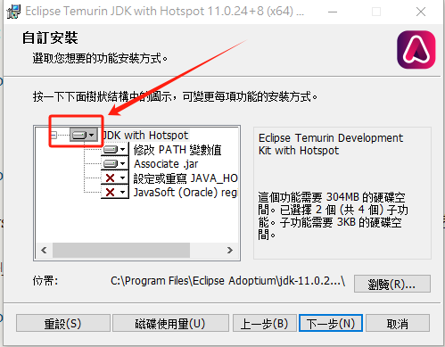
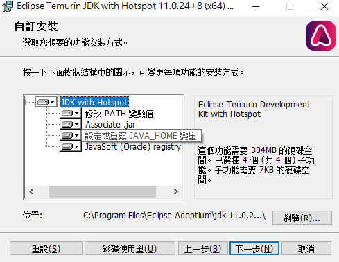

（安装）“Jvav”——从安装到放弃¶
这里推荐使用Adoptium OpenJDK/JRE。
国内可以使用清华镜像站：
Java11-JDK：
https://mirrors.tuna.tsinghua.edu.cn/Adoptium/11/jdk/
Java11-JRE：
https://mirrors.tuna.tsinghua.edu.cn/Adoptium/11/jre/
一般Windows用户选择x64架构即可（如果你不清楚x64、aarch64、x86等代表什么含义，请自行百度：处理器架构）。
其他版本请到上级目录：
https://mirrors.tuna.tsinghua.edu.cn/Adoptium/
Windows¶
直接双击打开下载的msi安装程序，下一步，我接受，下一步，所有用户，下一步。
注意：此步骤时，如果不想手动配置环境变量，请选择“整个功能将安装在本地磁盘上”，确保“设定或重写JAVA_HOME变量”被启用，最好把所有选项(关联jre文件等)都启用：


其他步骤没有需要注意的。
Linux¶
直接
sudo apt install openjdk-11-jdk-headless #jdk11
#sudo apt install openjdk-11-jre-headless #jre11
（可以输入java/javac命令，然后终端会输出
java -version
Command 'java' not found, but can be installed with:
sudo apt install openjdk-11-jre-headless # version 11.0.20.1+1-0ubuntu1~20.04, or
sudo apt install default-jre # version 2:1.11-72
sudo apt install openjdk-16-jre-headless # version 16.0.1+9-1~20.04
sudo apt install openjdk-17-jre-headless # version 17.0.8.1+1~us1-0ubuntu1~20.04
sudo apt install openjdk-8-jre-headless # version 8u382-ga-1~20.04.1
sudo apt install openjdk-13-jre-headless # version 13.0.7+5-0ubuntu1~20.04
javac -version
Command 'javac' not found, but can be installed with:
sudo apt install openjdk-11-jdk-headless # version 11.0.20.1+1-0ubuntu1~20.04, or
sudo apt install default-jdk # version 2:1.11-72
sudo apt install openjdk-16-jdk-headless # version 16.0.1+9-1~20.04
sudo apt install openjdk-17-jdk-headless # version 17.0.8.1+1~us1-0ubuntu1~20.04
sudo apt install openjdk-8-jdk-headless # version 8u382-ga-1~20.04.1
sudo apt install openjdk-13-jdk-headless # version 13.0.7+5-0ubuntu1~20.04
sudo apt install ecj # version 3.16.0-1
）